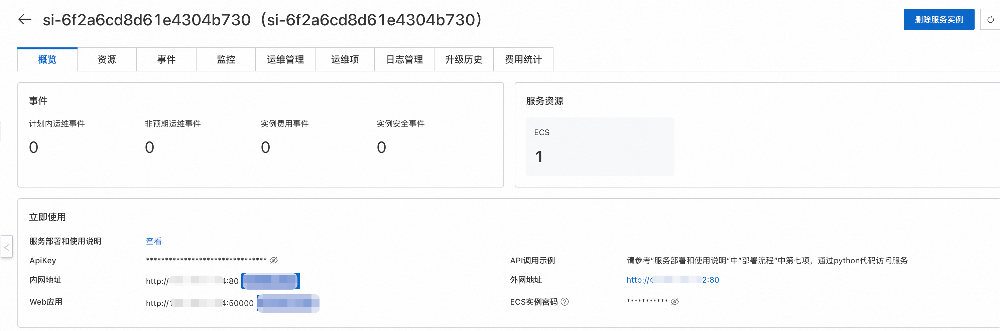

🎤 CosyVoice 语音合成服务
阿里云推出的先进语音合成技术
CosyVoice是阿里云推出的一款语音合成服务，它能够将文本转换成自然流畅的语音。这项服务支持多种语言和方言，可以满足不同场景下的需求，如新闻播报、有声读物制作、智能客服等。通过使用先进的深度学习技术，CosyVoice能够生成接近真人发声效果的声音，为用户提供更加丰富和人性化的交互体验。
🌍 多语言支持
• 支持的语言: 中文、英文、日文、韩文、中文方言（粤语、四川话、上海话、天津话、武汉话等） • 跨语言及混合语言：支持零样本的跨语言和代码转换场景的语音克隆。
• 支持的语言: 中文、英文、日文、韩文、中文方言（粤语、四川话、上海话、天津话、武汉话等） • 跨语言及混合语言：支持零样本的跨语言和代码转换场景的语音克隆。
⚡ 超低延迟
• 双向流支持: CosyVoice 2.0 集成了离线和流式建模技术。 • 快速首包合成: 在保持高质量音频输出的同时，实现了低至150毫秒的延迟。
• 双向流支持: CosyVoice 2.0 集成了离线和流式建模技术。 • 快速首包合成: 在保持高质量音频输出的同时，实现了低至150毫秒的延迟。
🎯 高精度
• 改进发音: 与CosyVoice 1.0相比，减少了30%到50%的发音错误。 • 基准测试成就: 在Seed-TTS评估集的困难测试集中达到了最低字符错误率。
• 改进发音: 与CosyVoice 1.0相比，减少了30%到50%的发音错误。 • 基准测试成就: 在Seed-TTS评估集的困难测试集中达到了最低字符错误率。
🛡️ 强稳定性
• 音色一致性: 确保了在零样本和跨语言语音合成中的可靠音色一致性。 • 跨语言合成: 相比1.0版本有了显著提升。
• 音色一致性: 确保了在零样本和跨语言语音合成中的可靠音色一致性。 • 跨语言合成: 相比1.0版本有了显著提升。
🎵 自然体验
• 增强韵律和音质: 改善了合成音频的一致性，将MOS评分从5.4提高到了5.53。 • 情感和方言灵活性: 现在支持更多细粒度的情感控制和口音调整。
• 增强韵律和音质: 改善了合成音频的一致性，将MOS评分从5.4提高到了5.53。 • 情感和方言灵活性: 现在支持更多细粒度的情感控制和口音调整。
📖 使用说明
在完成模型部署后，可以在计算巢服务实例概览页面看到模型的使用方式，里面提供了Api调用示例、内网访问地址、公网访问地址和ApiKey，下面会分别介绍如何访问使用。

1.png
🔹 API调用
🐍 Python 调用示例
以下为完整的 Python 调用示例代码：
以下为 Python 示例代码： 其中${ApiKey}需要填写页面上的ApiKey；${ServerUrl}需要填写页面上的公网地址或内网地址。
import argparse
import logging
import os
import requests
import torch
import torchaudio
import numpy as np
from contextlib import closing
# 配置日志
logging.basicConfig(level=logging.INFO, format='%(asctime)s - %(levelname)s - %(message)s')
def build_url(args):
"""构建API请求URL"""
return f"http://{args.host}:{args.port}/inference_{args.mode}"
def create_payload(args):
"""创建请求负载"""
payload = {'tts_text': args.tts_text}
if args.mode == 'sft':
payload['spk_id'] = args.spk_id
elif args.mode == 'instruct':
payload.update({
'spk_id': args.spk_id,
'instruct_text': args.instruct_text
})
return payload
def create_files(args):
"""创建文件上传参数"""
if args.mode in ['zero_shot', 'cross_lingual']:
return [('prompt_wav',
('prompt_wav', open(args.prompt_wav, 'rb'), 'application/octet-stream'))]
return None
def main():
try:
# 获取参数
args = get_args()
# 构建请求参数
url = build_url(args)
headers = {
"X-API-TOKEN": os.getenv("TTS_API_KEY", "${ApiKey}"), # 从环境变量获取密钥
"User-Agent": "TTS Client/1.0"
}
# 创建请求参数
payload = create_payload(args)
files = create_files(args)
# 发起请求
with closing(requests.get(
url,
params=payload,
files=files,
headers=headers,
stream=True,
timeout=30
)) as response:
response.raise_for_status()
# 处理音频数据
audio_data = b''
for chunk in response.iter_content(chunk_size=16000):
if chunk:
audio_data += chunk
# 转换音频格式
audio_tensor = torch.from_numpy(
np.frombuffer(audio_data, dtype=np.int16)
).unsqueeze(0)
# 保存音频文件
torchaudio.save(args.tts_wav, audio_tensor, args.target_sr)
logging.info(f"音频已保存到: {args.tts_wav}")
except requests.exceptions.RequestException as e:
logging.error(f"请求失败: {e}")
except Exception as e:
logging.error(f"发生错误: {e}", exc_info=True)
def get_args():
"""解析命令行参数"""
parser = argparse.ArgumentParser(description='TTS客户端')
# 服务器配置
parser.add_argument('--host', type=str, default=os.getenv("TTS_HOST", "localhost"))
parser.add_argument('--port', type=int, default=80)
parser.add_argument('--target-sr', type=int, default=22050, help='目标采样率')
# 模式配置
parser.add_argument('--mode', default='sft',
choices=['sft', 'zero_shot', 'cross_lingual', 'instruct'],
help='请求模式')
# 文本参数
parser.add_argument('--tts_text', type=str,
default='你好，我是通义千问语音合成大模型，请问有什么可以帮您的吗？')
# 模式相关参数
parser.add_argument('--spk_id', type=str, default='中文女')
parser.add_argument('--prompt_text', type=str,
default='希望你以后能够做的比我还好呦。')
parser.add_argument('--prompt_wav', type=str,
default='../../../asset/zero_shot_prompt.wav')
parser.add_argument('--instruct_text', type=str,
default='Theo \'Crimson\', is a fiery, passionate rebel leader. '
'Fights with fervor for justice, but struggles with impulsiveness.')
# 输出参数
parser.add_argument('--tts_wav', type=str, default='demo.wav')
args = parser.parse_args()
return args
if __name__ == "__main__":
main()
🔹 Web应用
点击安全代理访问，跳转到对应的页面就可以直接进行模型服务在线访问了。
🎯 快速开始
1️⃣ 获取访问信息
在计算巢服务实例概览页面获取 ApiKey 和访问地址
2️⃣ 选择调用方式
支持 Python API 调用和 Web 应用直接访问
3️⃣ 开始使用
配置参数后即可享受高质量的语音合成服务
🎤 CosyVoice | 让文字拥有生命力的声音
© 2009-2022 Aliyun.com 版权所有